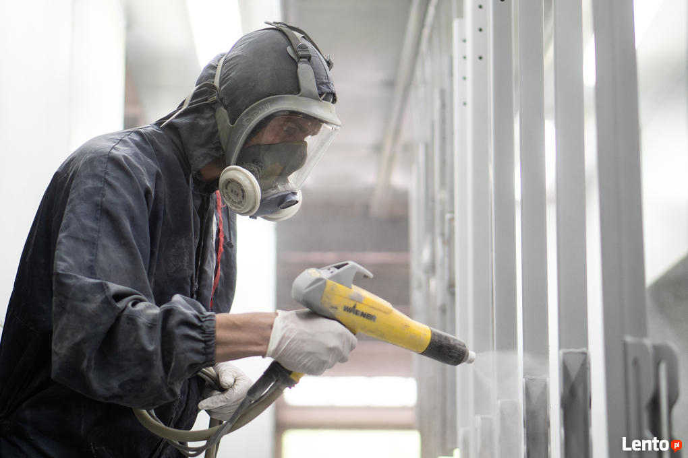
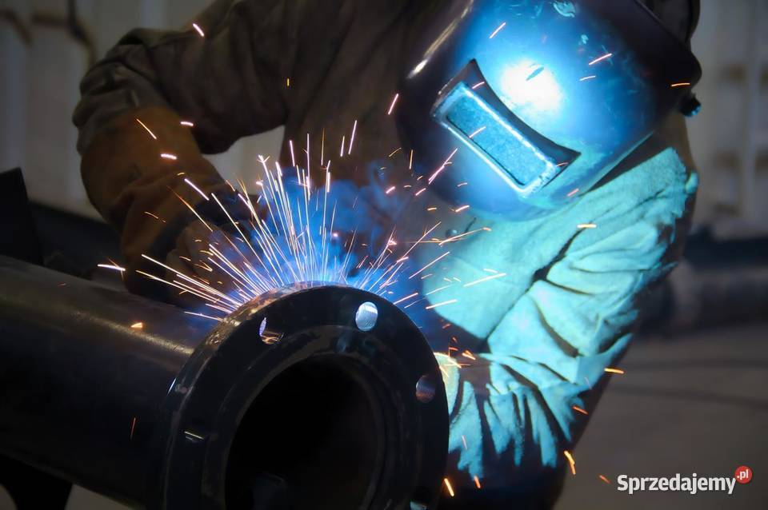
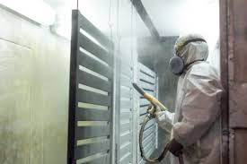
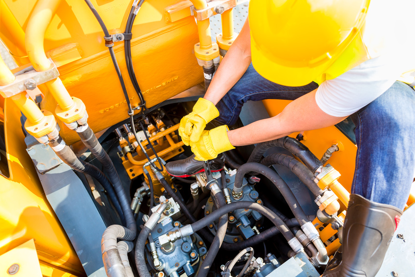
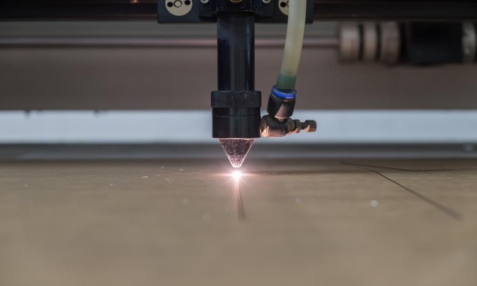
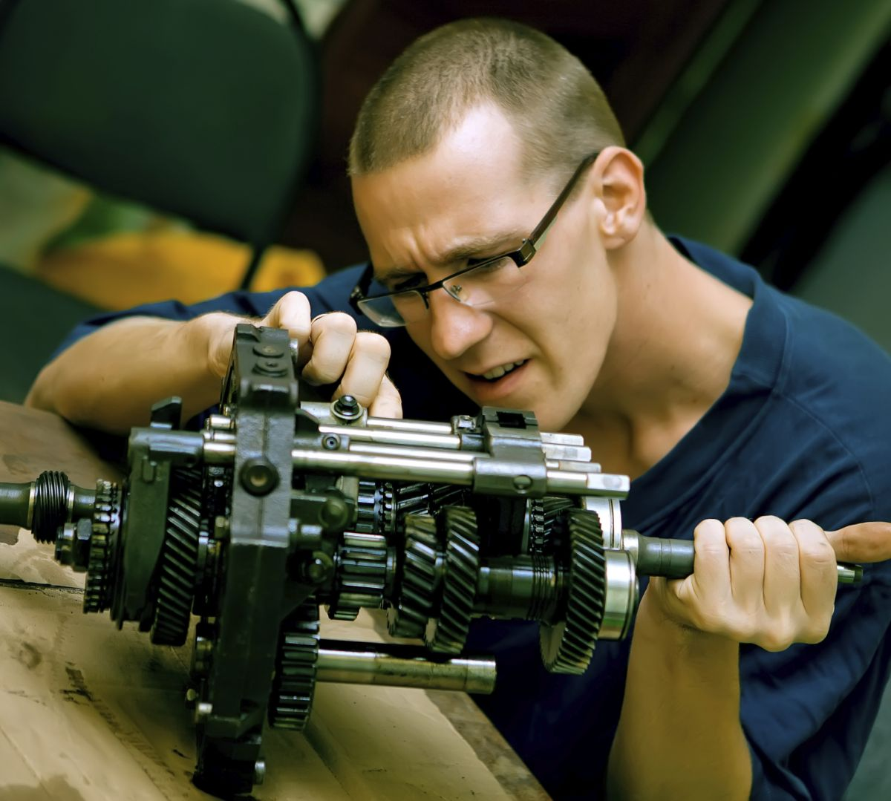
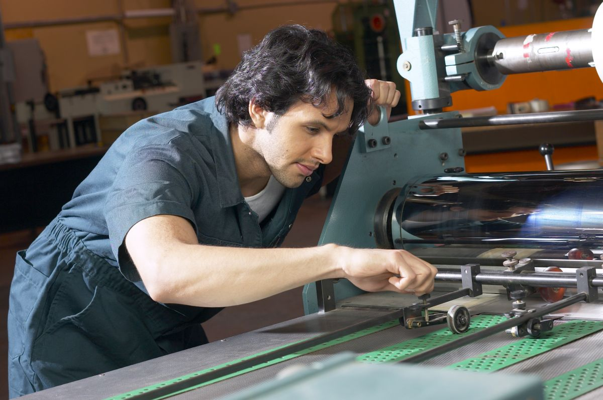
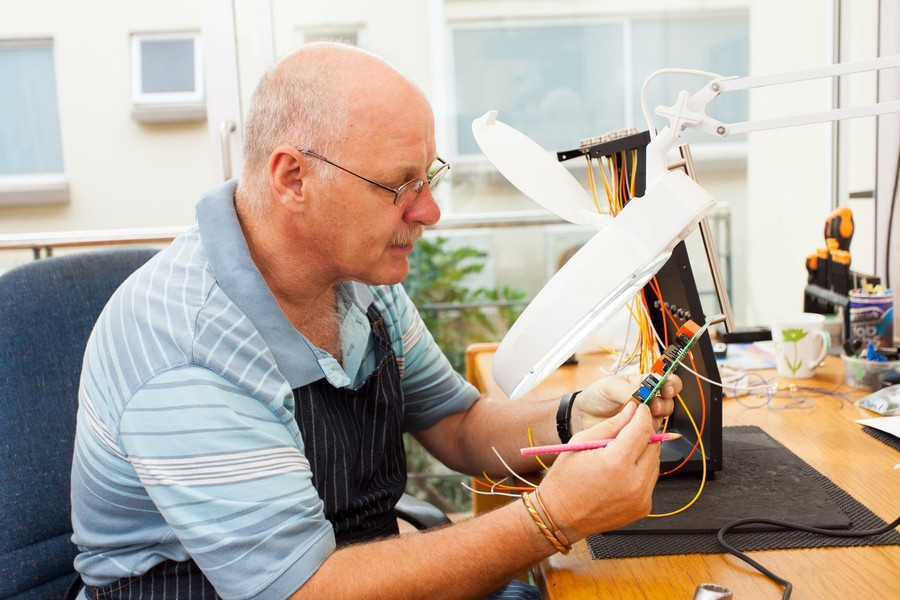

MALARZ PROSZKOWY

- Malowanie detali o zróżnicowanej geometrii,
- Realizacja procesu w oparciu o aplikację
ręczną i automatyczną, - Spełnianie norm jakościowych,
- Realizacja norm ilościowych,
- Współpraca z pozostałymi zespołami
produkcyjnymi Organizacji, - Podjęcie odpowiedzialności za proces wytwórczy.
ŚLUSARZ/ SPAWACZ

- prace ślusarskie w ramach produkcji urządzeń,
- współpraca z konstruktorem w zakresie rozwiązań produktowych
(urządzenia rehabilitacyjne oraz integracyjne na place zabaw), - montaż urządzeń na placach zabaw,
- współpraca z pozostałymi zespołami wytwórczymi w zakresie
zleconych komponentów do produkcji, - udział w testach urządzeń z Odbiorcami końcowymi.
MALARZ / LAKIERNIK

- malowanie detali o zróżnicowanej geometrii,
- realizacja procesu w oparciu o aplikację ręczną,
- spełnianie norm jakościowych,
- realizacja norm ilościowych,
- współpraca z pozostałymi zespołami produkcyjnymi Organizacji,
- podjęcie odpowiedzialności za proces wytwórczy,
- dynamizm i samodzielności w działaniu.
MONTER - MASZYNY BUDOWLANE

- diagnostyka i naprawa pneumatycznych maszyn przeciskowych,
- montaż końcowy maszyn przeciskowych i podzespołów,
- testy wyrobów gotowych i podzespołów,
- współpraca z Zespołem Produkcji i Konstruktorami w zakresie nowych maszyn i rozwiązań,
- prace serwisowe wymagające dużej siły i kondycji fizycznej ze względu na gabaryty naprawianych maszyn,
- inne prace serwisowe i czynności mechaniczne związane z rozwojem produktowym.
OPERATOR OBRÓBKI LASEROWEJ

- prowadzenie bieżących pomiarów podczas produkcji,
- wprowadzanie korekt do obrabiarek,
- odpowiedzialność za prawidłowe ustawienie maszyny (przy pełnym wsparciu Technologów),
- dbanie o powierzone mienie,
- umiejętność posługiwania się narzędziami pomiarowymi,
- doświadczenie w obsłudze laserowych urządzeń CNC, w tym maszyn Trumpf,
- mile widziana umiejętność optymalizacji parametrów operacji cięcia,
- możliwość wyboru ubezpieczenia grupowego.
MONTER - MASZYNY BUDOWLANE

- diagnostyka i naprawa pneumatycznych maszyn przeciskowych,
- montaż końcowy maszyn przeciskowych i podzespołów,
- testy wyrobów gotowych i podzespołów,
- współpraca z Zespołem Produkcji i Konstruktorami w zakresie nowych maszyn i rozwiązań,
- prace serwisowe wymagające dużej siły i kondycji fizycznej ze względu na gabaryty naprawianych maszyn,
- inne prace serwisowe i czynności mechaniczne związane z rozwojem produktowym.
MONTER - MASZYNY BUDOWLANE

- diagnostyka i naprawa pneumatycznych maszyn przeciskowych,
- montaż końcowy maszyn przeciskowych i podzespołów,
- testy wyrobów gotowych i podzespołów,
- współpraca z Zespołem Produkcji i Konstruktorami w zakresie nowych maszyn i rozwiązań,
- prace serwisowe wymagające dużej siły i kondycji fizycznej ze względu na gabaryty naprawianych maszyn,
- inne prace serwisowe i czynności mechaniczne związane z rozwojem produktowym.
SPECJALISTA DS. ZAKUPÓW STRATEGICZNYCH

- dobór odpowiednich gatunków stali, metali kolorowych dla kreowania nowych funkcjonalności produktów,
- zarządzanie bazą dostawców,
- przygotowywanie zapytań ofertowych, prowadzenie przetargów i negocjacji zakupowych,
- współpraca z Zespołem Produkcji i Konstruktorami w zakresie nowych maszyn i rozwiązań,
- prace serwisowe wymagające dużej siły i kondycji fizycznej ze względu na gabaryty naprawianych maszyn,
- inne prace serwisowe i czynności mechaniczne związane z rozwojem produktowym.
KONSTRUKTOR ELEKTRONIK – PRODUKTY ELEKTRYCZNE

- dobór odpowiednich gatunków stali, metali kolorowych dla kreowania nowych funkcjonalności produktów,
- zarządzanie bazą dostawców,
- przygotowywanie zapytań ofertowych, prowadzenie przetargów i negocjacji zakupowych,
- współpraca z Zespołem Produkcji i Konstruktorami w zakresie nowych maszyn i rozwiązań,
- prace serwisowe wymagające dużej siły i kondycji fizycznej ze względu na gabaryty naprawianych maszyn,
- inne prace serwisowe i czynności mechaniczne związane z rozwojem produktowym.